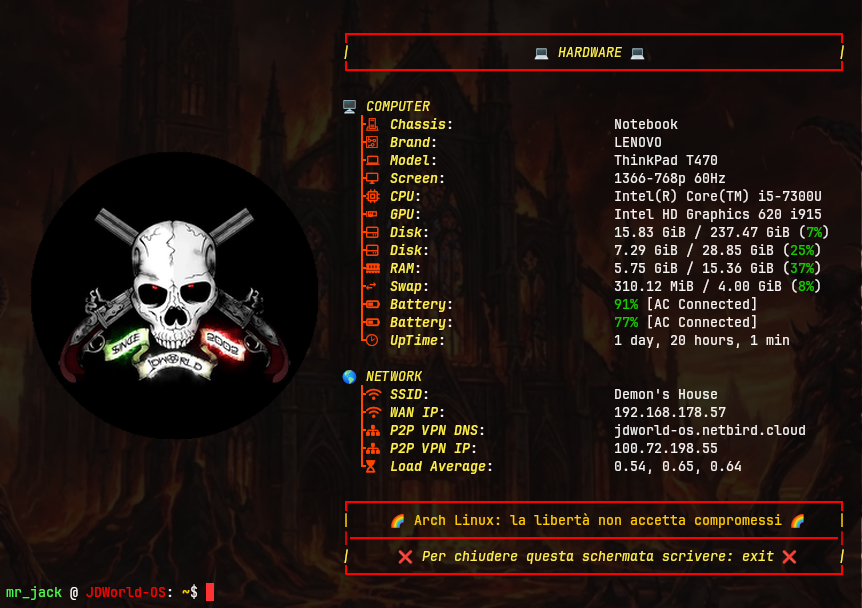
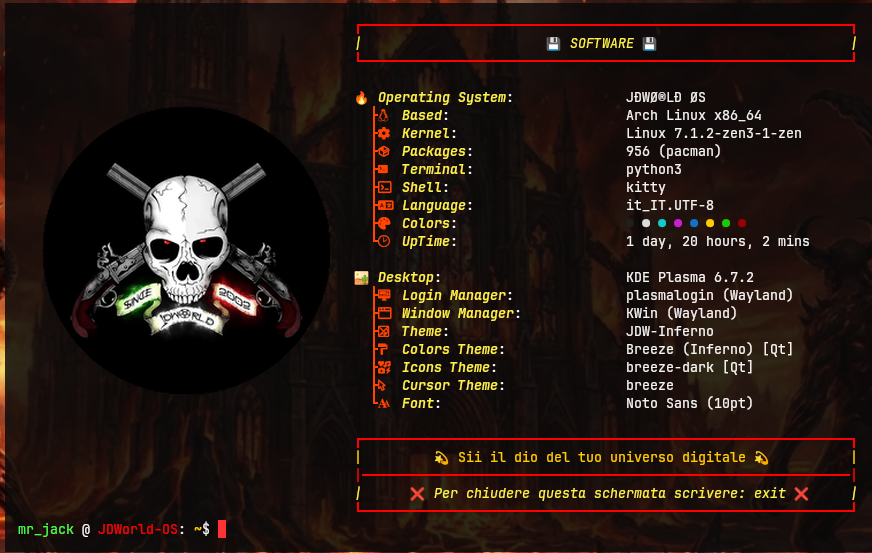
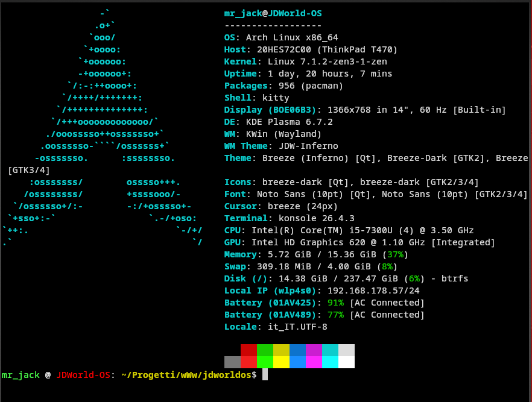

Terminale Avanzato e Profili Fetch Custom
Questo pacchetto integra l’emulatore di terminale Kitty, i Nerd Fonts e configura 4 profili grafici intercambiabili di Fastfetch con citazioni dinamiche ad ogni avvio.
📦 Scheda Tecnica del Pacchetto
- Name: JDWorld OS Fastfetch Custom jdwos-ff-stm
- Architecture: Nativa Indipendente (.jdw)
- Distro: Arch Linux
- License(s): Simplified BSD License
- Maintainers: JDWorld
- Package Size: 12.4 KB
- Build Date: 2026-06-20
- Update Date: 2026-07-15
🧰 Dipendenze Richieste
Il sistema provvederà a scaricare automaticamente dai repository ufficiali puri di Arch:
kitty(Emulatore di terminale)fastfetch(Motore di estrazione dati)ttf-nerd-fonts-symbols-common(Icone e glifi per i profili)ttf-jetbrains-mono-nerd(Icone e glifi per i profili)ttf-nerd-fonts-symbols(Icone e glifi per i profili)
🛠️ Istruzioni di Installazione rapida
Grazie al nuovo JDWorld OS Package Manager Universale, puoi installare questo pacchetto direttamente dal cloud senza scaricare nulla a mano. Apri il terminale e digita:
jdw-install jdwos-ff-stm.jdwPer la rimozione chirurgica:
jdw-remove jdwos-ff-stm💾 Download Diretto del Binario
Scarica il pacchetto binario jdwos-ff-stm .jdw
🔄 Profili di Switch inclusi nel terminale e nel STM:
fastfetch- Profilo Full Custom (Default)ff-hard- Profilo incentrato sull’Hardwareff-soft- Profilo incentrato sul Softwareff-stock- Profilo Stock pulito senza fronzoli
Anteprima
Profilo: fastfetch

Profilo: ff-hard

Profilo: ff-soft

Profilo: ff-stock

Sviluppato come parte del sistema operativo personalizzato JÐWØ®LÐ ØS. JDWorld OS Console Terminal - Registro di bordo del 11 Luglio 2026